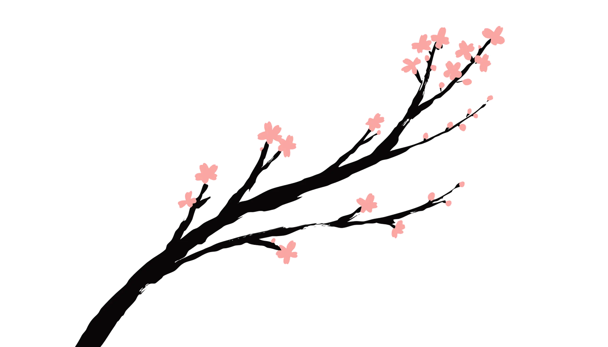

OSNote
In bloom. Draw on top of any app — circle it, scribble it, save it.
visit the blossom ↗APPS THAT BLOOM
scroll — the night will pass

THE ORCHARD · 庭
Nothing here grows in a hurry. That's the point.
IN BLOOM · 開花
In bloom. Draw on top of any app — circle it, scribble it, save it.
visit the blossom ↗A bud on the branch. It opens when it's ready — not before.
buddingHOW WE GROW · 育